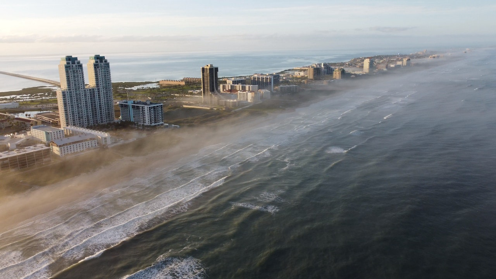

Here are a few reasons why the Lonestar state may be just the place for you!

-
Diverse Outdoor Recreation
From beach activities to hiking in picturesque hill country, Texas offers a diverse range of outdoor recreational opportunities that alighn with a love for warm weather.
-
Gulf Coast Beaches
Texas boasts beautiful Gulf Coast beaches, such as South Padre Island and Galveston, offering sandy shores, warm waters, and opportunities for water sports and relaxation.
-
Affordability
Texas's cost of living is relatively affordable compared to some other beach destinations, allowing you to enjoy the beach lifestyle without breaking the bank.
-
Vibrant Coastal Culture
Coastal towns in Texan have a unique blend of cultures, delicious seafood cuisine, and lively beachside events that can be appealing to those whose enjoy beach vibes.
-
Year-Round Sunshine
Texas enjoys plenty of sunshine throughout the year, making it a great place for those who love soaking up the sun and praticipating in outdoor activities.
Remember, while Texas offers many perks for beach and hot weather enthusiasts, it's also important to consider factors like job opportunities, community, and personal preferences before making a decision to move.
